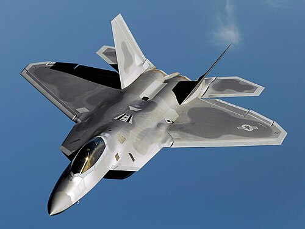
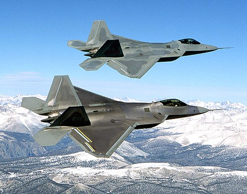
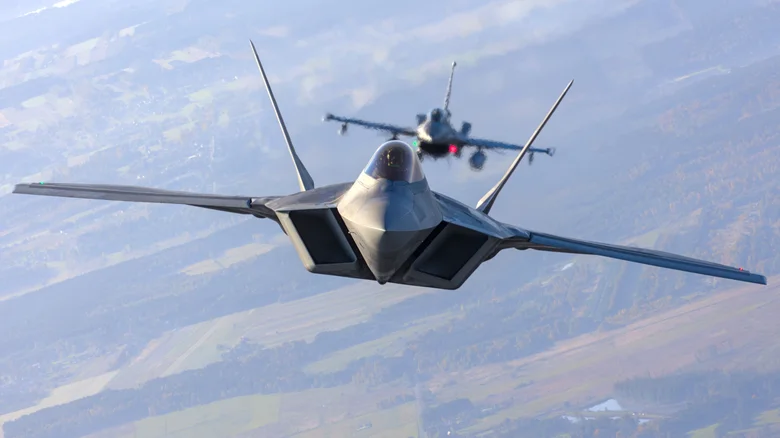

F-22 Raptor
Pesawat F-22 Raptor Merupakan Pesawat Generasi Ke-5 Dengan Sistem Yang Sangat Canggih



F-22 Raptor adalah pesawat tempur siluman generasi kelima yang dirancang untuk keunggulan udara, dikembangkan oleh Lockheed Martin untuk Angkatan Udara AS. Pesawat ini merupakan jet tempur operasional generasi kelima pertama di dunia, yang menggabungkan kemampuan siluman (stealth), kelincahan, dan avionik canggih.